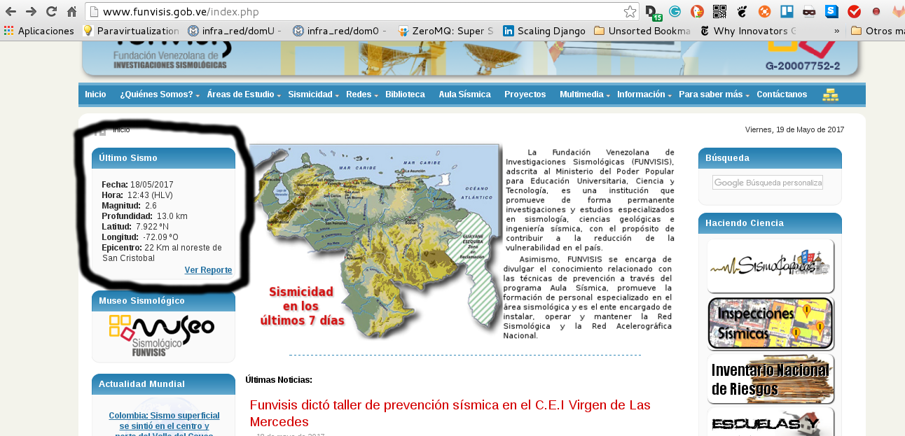
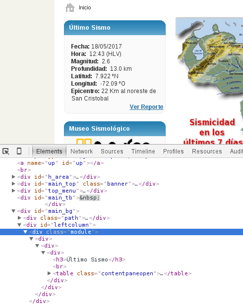

Este artículo es gracias al código desarrollado por William Cabrera, donde en su blog menciona que creó un Canal en Telegram sobre los Sismos en Venezuela. El código fuente de sus scripts en php fueron la base para el código Python que se muestra en este artículo.
Gracias William por esta herramienta de información que es el Canal en Telegram.
Se usará mechanize y BeautifulSoup para obtener la información del sitio de funvisis por medio de WebScraping. La información que se quiere obtener se muestra en un recuadro en la siguiente figura:

Para ver cual sección del código html se tiene que buscar, se le da boton derecho a inspeccionar elemento y la siguiente figura muestra el resultado:

Ahí se ve claramente el tag html que es necesario buscar.
A continuación se muestra el código de la aplicación:
#!/usr/bin/env python
#Se importa mechanize y cookielib
import mechanize
import cookielib
#Se importa beautifulSoup
from BeautifulSoup import BeautifulSoup
def Sismo():
br = mechanize.Browser()
#Se crea una instancia para la Cookie
cj = cookielib.LWPCookieJar()
#Se asocia la instancia del cookie con el navegador.
br.set_cookiejar(cj)
#Se deshabilita el manejo de robots.txt
br.set_handle_robots(False)
#Se define el tiempo de refrescamiento
br.set_handle_refresh(mechanize._http.HTTPRefreshProcessor(), max_time=1)
#Se pasa el url del sitio timeanddate con la informacion
url = "http://www.funvisis.gob.ve/"
urlhome = url + "index.php"
#de la salida y ocultamiento del sol en Venezuela.
#Se define las cabeceras del navegador, en este caso se le esta diciendo
# que el navegador es un firefox desde Linux Debian
br.addheaders = [('SSL_VERIFYHOST', False),\
('FRESH_CONNECT',True),\
('RETURNTRANSFER',True),\
('SSL_VERIFYPEER', False),\
('Referer', 'http://www.cantv.com.ve'),\
('User-agent','Mozilla/5.0 (X11; U; Linux i686; es-VE; rv:1.9.0.1)Gecko/2008071615 Debian/6.0 Firefox/9')]
#Se abre el url
r = br.open(urlhome)
#Se lee el htmml de la pagina
html = br.response().read()
#Se crea una instancia de BeautifulSoup pasando el html
#a verificar
soup = BeautifulSoup(html)
sismo = {}
#SE obtiene el primer div que tengan class module
for row in soup('div', {'class': 'module'})[0]:
#Se obtiene el tag a para luego obtener el href y tener el url
#del gif del sitio de funvisis que tiene la imagen del sitio donde
#fue el sismo.
trs = row.find('a')
if trs == -1:
continue
sismo['urlref'] = url + trs.get('href',None)
trs = row.find('tr')
if trs == -1:
continue
#Obtiene los datos del sismo del sitio de funvisis
datos = trs.find('td').getText()
sismo['fecha'] = datos.split(' ')[1][:-5]
sismo['hora'] = datos.split(' ')[2][-20:-14]
sismo['magnitud'] = datos.split(' ')[3][-16:-12]
sismo['profundidad'] = datos.split(' ')[4][-6:] + " " + datos.split(' ')[5][-11:-8]
sismo['latitud'] = datos.split(' ')[6].split('º')[0][-9:] +datos.split(' ')[6][-10:-9]
linea = datos.split(' ')[7].split('º')
sismo['longitud'] = linea[0][-9:]+ linea[1][0]
sismo['epicentro'] = datos.split(' ')[8]
return sismo
def EventoSismoJSON():
#Devuelve los datos del sismo en formato JSON
import json
return json.dumps(Sismo())
if __name__ == '__main__':
print Sismo()
print EventoSismoJSON()
A ejecutar el Script devuelve el diccionario con la información del evento sismológico.
python sismux_getdata.py
{'hora': u'16:13 ', 'latitud': u' 11.73 N', 'epicentro': u'52 Km al sur de Curazao', 'profundidad': u' 40.6 km', 'fecha': u'19/05/2017', 'urlref': u'http://www.funvisis.gob.ve/images/reportes/2017/05/reporte_7415.gif', 'magnitud': u' 3.0', 'longitud': u' -68.93 O'}
{"hora": "16:13 ", "latitud": " 11.73 N", "epicentro": "52 Km al sur de Curazao", "profundidad": " 40.6 km", "fecha": "19/05/2017", "urlref": "http://www.funvisis.gob.ve/images/reportes/2017/05/reporte_7415.gif", "magnitud": " 3.0", "longitud": " -68.93 O"}
El código fuente del script lo pueden ver en el repositorio de gitlab.
El siguiente artículo será subir la información en una base de datos mongoDB en mongolab y consultar si el evento sismográfico ya no está registrado.
¡Haz tu donativo! Si te gustó el artículo puedes realizar un donativo con Bitcoin (BTC) usando la billetera digital de tu preferencia a la siguiente dirección: 17MtNybhdkA9GV3UNS6BTwPcuhjXoPrSzV
O Escaneando el código QR desde la billetera:

Comments !